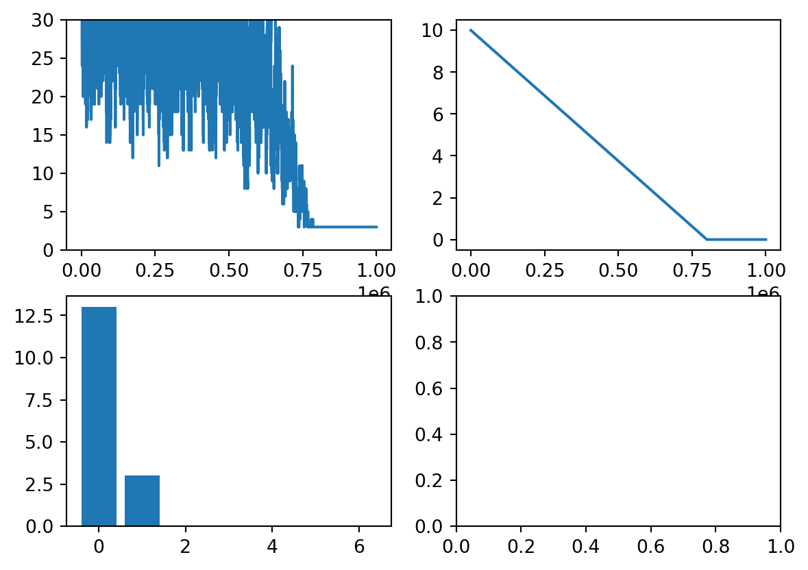

Code
import numpy as np
import matplotlib.pyplot as plt
import pandas as pd
def ComputeSatisfaction(A_i,v_i):
S=100
for i in range(5):
if A_i[i]==v_i:
S=i
return S
def ComputeOverallSatisfaction(A,v):
Overall_Satisfaction_Score=0.0
for i in range(A.shape[0]):
Overall_Satisfaction_Score+=ComputeSatisfaction(A[i,:],v[i])
return Overall_Satisfaction_Score
def perturb_assignment(v,non_assigned_projects):
v_perturb=v.copy()
non_assigned_projects_perturb=non_assigned_projects.copy()
uni_0_1=np.random.uniform()
if uni_0_1<0.5:
shuffle_method=1
else:
shuffle_method=2
if shuffle_method==1:
student_i=np.random.randint(0,len(v))
student_j=np.random.randint(0,len(v))
v_perturb[student_i]=v[student_j]
v_perturb[student_j]=v[student_i]
else:
# Randomly select index for student and non assigned project
student_index=np.random.randint(0,len(v))
project_index=np.random.randint(0,len(non_assigned_projects))
# Swap student i project with one from unassigned list
project_from_non_assigned=non_assigned_projects_perturb[project_index]
existing_project_st_i=v_perturb[student_index]
v_perturb[student_index]=project_from_non_assigned
# Pass student is project onto unassigned list
non_assigned_projects_perturb[project_index]=existing_project_st_i
#print(project_index)
#print(student_index)
#print(non_assigned_projects[project_index])
#print(v[student_index])
return v_perturb,non_assigned_projects_perturb
def Score_Assignment(A,v):
preference_hit=np.zeros((1,A.shape[1]),dtype=int)
print(preference_hit.shape)
for i in range(A.shape[0]):
for j in range(A.shape[1]):
if A[i,j]==v[i]:
preference_hit[0,j]+=1
return np.squeeze(preference_hit)
def ComputeSupervisorWorkload(df_project,v):
# Loop over students
df_workload=pd.DataFrame(columns=['Supervisor','Num_projects'])
unique_supervisors=df_project['Supervisor'].unique()
df_workload['Supervisor']=pd.Series(unique_supervisors)
df_workload['Num_projects']=0
for i in range(len(v)):
project_i=v[i]
# # Identify assigned project
supervisor=(df_project['Supervisor'][df_project['ID']==project_i])
supervisor=(np.squeeze(supervisor.to_numpy()))
num_existing_projects=df_workload['Num_projects'][df_workload['Supervisor']==supervisor]
df_workload['Num_projects'][df_workload['Supervisor']==supervisor]+=1
return df_workload
# Find supervisor for project
# Increment supervisor project count
use_data=2
# Load preference matrix
if use_data==1:
A=np.array([[1, 4, 6, 5, 1],[1, 4, 5, 2, 3],[2, 5, 6, 7, 22]])
num_students=A.shape[0]
assigned_projects=np.array([1,4,2])
non_assigned_projects=np.array([3,5,7,9,10,11,12,13])
else:
str='../StudentPreferencesAY20242025-2.csv'
df=pd.read_csv(str)
A=df.iloc[:, 3:10]
A=A.to_numpy()
num_students=A.shape[0]
FirstName=df['FirstName']
SurName=df['Surname']
project_str='../projects.csv'
df_project=pd.read_csv(project_str)
project_inds=df_project.iloc[:, 0]
SupervisorName=df_project['Supervisor']
project_inds=project_inds.to_numpy()
assert(len(np.unique(project_inds))==len(project_inds))
assigned_projects=np.random.choice(project_inds,num_students,replace=False)
non_assigned_projects=np.setdiff1d(project_inds,assigned_projects)
#assert(len(np.intersect(non_assigned_projects,assigned_projects))==0)
i=2
Satisfaction_Score=ComputeSatisfaction(A[2],assigned_projects[2])
overall_satisfaction_Score=ComputeOverallSatisfaction(A,assigned_projects)
# S
max_Temp=10.0
num_its=1000000
it_vec=np.arange(num_its)
Satisfation_score=np.zeros((num_its,1))
Temp_profile=np.zeros_like(Satisfation_score)
Temp_profile=max_Temp*(1-it_vec/(0.8*num_its))
Temp_profile[Temp_profile<0.0]=0.001
for it_ind in it_vec:
o_sat_sc=ComputeOverallSatisfaction(A,assigned_projects)
# Perturb v
v_perturb,non_assigned_projects_perturb=perturb_assignment(assigned_projects,non_assigned_projects)
# Recompute overall_satisfaction
perturbed_o_sat_sc=ComputeOverallSatisfaction(A,v_perturb)
do_print=False
if do_print==True:
print('Assignments')
print(assigned_projects)
print(v_perturb)
print('Scores:')
print(o_sat_sc)
print(perturbed_o_sat_sc)
# Accept with some prob
if perturbed_o_sat_sc<o_sat_sc:
assigned_projects=v_perturb
o_sat_sc=perturbed_o_sat_sc
non_assigned_projects=non_assigned_projects_perturb
else:
Delta_S=perturbed_o_sat_sc-o_sat_sc
Delta_S=Delta_S
T=Temp_profile[it_ind].astype(float)
prob_acc=np.exp(-1.0*Delta_S/T)
r=np.random.uniform()
if r<prob_acc:
assigned_projects=v_perturb
o_sat_sc=perturbed_o_sat_sc
non_assigned_projects=non_assigned_projects_perturb
# Record satisfaction score
Satisfation_score[it_ind]=o_sat_sc
assigned_project_counts=Score_Assignment(A,assigned_projects)
df_num_projects=ComputeSupervisorWorkload(df_project,assigned_projects)
fig,ax=plt.subplots(2,2)
ax[0,0].plot(Satisfation_score)
ax[0,0].set_ylim([0, 30])
ax[0,1].plot(Temp_profile)
project_ind=np.arange(A.shape[1])
ax[1,0].bar(project_ind,assigned_project_counts)
#print(assigned_projects)
assert(len(np.unique(assigned_projects))==len(assigned_projects))
df_assigned_projects1=pd.DataFrame(columns=['FirstName','SurName','AssignedProject','Supervisor'])
df_assigned_projects1['FirstName']=FirstName
df_assigned_projects1['SurName']=SurName
df_assigned_projects1['AssignedProject']=assigned_projects
df_assigned_projects = pd.merge(left=df_assigned_projects1, right=df_project, left_on='AssignedProject', right_on='ID')/var/folders/m_/vc0kz_0x6ls5n4qnksq052jw0000gp/T/ipykernel_5491/3569930174.py:187: RuntimeWarning:
divide by zero encountered in scalar divide
(1, 7)/var/folders/m_/vc0kz_0x6ls5n4qnksq052jw0000gp/T/ipykernel_5491/3569930174.py:96: SettingWithCopyWarning:
A value is trying to be set on a copy of a slice from a DataFrame
See the caveats in the documentation: https://pandas.pydata.org/pandas-docs/stable/user_guide/indexing.html#returning-a-view-versus-a-copy
